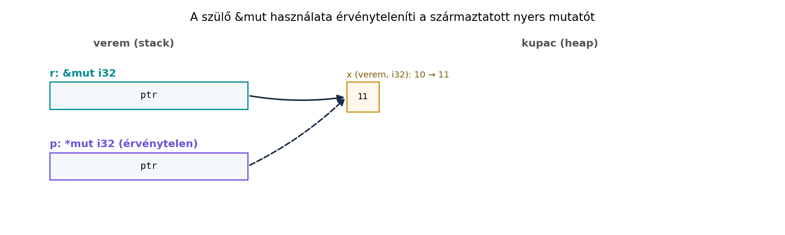

A C++-ban a nyers mutató és a reinterpret_cast a nyelv
alaprétegéhez tartozik. Amikor FFI-t írunk, egyedi memóriaelrendezést
készítünk, vagy a fordító által nem látható invariánst tartunk fenn,
gyakran nincs más választásunk: void*-ot castolunk,
char*-on keresztül nyúlunk objektumokhoz, és reméljük, hogy
a kód a gyakorlatban működik. A modern C++ ezt a réteget a
std::launder, a std::bit_cast, a
restrict és a memóriamodell szabályaival próbálja
megregulázni, de a hibák továbbra is gyakran csak futásidőben, és
gyakran csak „ritkán reprodukálhatóan” jelennek meg.
A Rust ezt a határvonalat nyelvi szintre emeli. A biztonságos Rust
nem engedi meg a nyers mutatók dereferálását, a union mezők
olvasását vagy a static mut olvasását – ezeket explicit
unsafe blokkba kell tenni. Az unsafe nem a
„veszélyes üzemmód” kapcsolója, hanem egy szerződés: a
felelősség áthelyeződik a fordítóról a programozóra. Aki pedig ezt a
szerződést megszegi, nem definiált viselkedést (UB – undefined
behaviour) kaphat, amit a Rust a C++-hoz hasonlóan, de bizonyos pontokon
még szigorúbban kezel. Ebben az alfejezetben az unsafe öt képességét, a
nyers mutatókat, a tipikus UB-forrásokat és a Miri detektort tanuljuk
meg. A cél nem az, hogy mindent unsafe-ben írjunk, hanem
hogy megértsük, milyen invariánsokat kell fenntartani ahhoz, hogy a
ritka, valóban szükséges unsafe kód helyes legyen – és hogy a köré
épített biztonságos absztrakció ne hazudjon a hívónak.
Definíció (unsafe blokk). Az
unsafe { ... } szintaktikai jelölés, amelyben a következő
öt művelet elvégezhető. Maga a blokk semmilyen ellenőrzést nem kapcsol
ki; a kódváltoztatást nem hajtja végre, csupán a programozó nyilatkozata
arról, hogy a benne foglalt kód kielégíti a nyelv által megkövetelt
invariánsokat.
Definíció (unsafe fn). Az unsafe fn
olyan függvény, amelyet biztonságos kódból csak unsafe
blokkon belül lehet hívni; a # Safety dokumentációs
szakaszban meg kell adni a hívóra háruló előfeltételeket. A törzsében a
veszélyes műveletek a lintszinttől függnek: a 2021-es
editionben az unsafe fn törzse implicit unsafe
környezet; a 2024-es editionben (ezt használja a könyv) az
unsafe_op_in_unsafe_fn lint alapértelmezése
warn, tehát a törzsben a veszélyes műveletet külön
unsafe { ... } blokkba kell tenni, különben figyelmeztetést
kapunk (E0133 a nyers mutató dereferálására). Ha a projekt
ezt kötelezővé teszi, konfigurációként emeljük deny-ra:
#![deny(unsafe_op_in_unsafe_fn)] a crate gyökerében, vagy a
Cargo.toml [lints.rust] szakaszában.
Definíció (unsafe trait és impl). Az
unsafe trait olyan trait, amelynek implementálása további,
a fordító által nem ellenőrizhető invariánsokat követel (például
Send, Sync, GlobalAlloc). Az
ilyen trait-et unsafe impl-lel lehet csak implementálni. Az
unsafe impl nem művelet a függvénytörzsben, hanem
deklaráció: az implementáló vállalja az invariánst.
Szabály (az unsafe öt képessége). A következő öt
dolog igényel unsafe jelölést; érdemes külön kategóriába
sorolni őket, mert a fordító különbözőképpen kezeli:
*const T vagy *mut T)
dereferálása (művelet, unsafe
blokkban);unsafe fn vagy unsafe metódus
meghívása (művelet, unsafe blokkban; az
unsafe fn törzsében a 2024-es editionben a lint
dönt, lásd fent);unsafe trait implementálása
(unsafe impl): deklaráció, nem művelet;static mut változó elérése (olvasás és
írás, a 2024-es editionben a referenciaképzés is tiltott lint);union mezőjének olvasása (művelet,
unsafe blokkban). A union mezőjének
írása biztonságos (ha a mező Copy vagy
ManuallyDrop): u.f = 2.0; unsafe
nélkül fordul, az olvasás (u.i) nem.A 2024-es editionben az unsafe jelölés két
deklarációs helyen is kötelező: az idegen függvényeket
tartalmazó unsafe extern "C" { ... } blokkon (a deklaráció
helyességét – szignatúra, ABI – a programozó vállalja; az egyes elemek
safe/unsafe jelölést kaphatnak) és az unsafe
attribútumokon (#[unsafe(no_mangle)],
#[unsafe(export_name = ...)]). Ezekkel a C ABI: extern “C”, repr(C), bindgen és cbindgen
alfejezetben találkozunk.
Fontos: az unsafe nem kapcsolja ki a
kölcsönzés-ellenőrzőt (borrow checker). Ha egy unsafe
blokkban biztonságos referenciákat (&T /
&mut T) hozunk létre, azokra továbbra is érvényesek a
Referenciák és a kölcsönzési szabály: sok olvasó XOR
egy író és az Élettartam-annotációk és az
elision szabályai alfejezet szabályai; a nagy unsafe
blokk sem kapcsol ki egyetlen biztonságos ellenőrzést sem. Az
unsafe csak a fenti öt nyelvi határig terjed; minden más,
így a mintaillesztés, a move-szemantika, a generikusok ellenőrzése és a
Result kezelés változatlanul működik.
A Rust nyers mutatói a C++ const T* / T*
párnak felelnek meg: típusos memóriacímek, ahol a *const T
a pointee konstansságát, a *mut T a pointee
módosíthatóságát jelzi. A mutatóváltozó saját konstanssága (C++-ban
T* const) nem a mutató típusában, hanem a let
kötésben jelenik meg. Szemantikájukban annyiban különböznek a C++
mutatóktól, hogy nincs tulajdonjoguk, nincs
élettartam-információjuk, és nem ellenőrzi őket a borrow
checker; a típusuk azonban megmarad, ezért nem
void*-ként kell kezelni őket. A *const T és a
*mut T közti különbség a szándék dokumentálása és a
const/mut megfeleltetés: a
*const T a &T, a *mut T a
&mut T nyers megfelelője (*const T-ből
cast_mut()-tal lehet *mut T-t kapni, de az
eredeti &T-ből származó mutatón keresztüli írás UB).
Egy mutató önmagában nem garantál semmit: a dereferálás szerződése a
provenance (a mutató melyik allokációból/referenciából
származik), a határok (az allokáción belül), az
inicializáltság, a hozzáférési jog (írás csak írható
származtatásból), az aliasing és az élettartam.
| C++ | Rust | Mit jelent |
|---|---|---|
const T* |
*const T |
a pointee nem módosítható ezen a mutatón át |
T* |
*mut T |
a pointee módosítható |
T* const |
let p: *mut T |
a mutatóváltozó nem írható át, a pointee igen |
átírható mutató (T*) |
let mut p: *mut T |
a mutatóváltozó is átírható |
Nyers mutatót biztonságos kódban is létre lehet hozni, csak dereferálni nem:
let x = 42;
let p: *const i32 = &x; // biztonságos: referencia → nyers mutató
let q: *const i32 = std::ptr::null(); // biztonságos: null mutató
let r = p as usize; // biztonságos: cím egész számmá alakítása
// let y = *p; // HIBA: dereferálás csak unsafe blokkbanA mutató-aritmetika a C++ p + i műveletének felel meg,
de explicit metódusokkal történik:
add(n) / sub(n): előre / hátra lép
n elemmel; az eredménynek ugyanabban az allokációban (vagy
közvetlenül utána) kell lennie, különben UB.offset(n): a add/sub alacsony
szintű megfelelője; a hívó felel az érvényességért.wrapping_add(n) / wrapping_sub(n):
túlcsordulás-biztos lépés; a kapott mutató akár érvénytelen is lehet, de
a dereferálás csak akkor szabályos, ha érvényes.read() / write(): egyetlen elem olvasása /
írása a mutató címén. A write nem
droppolja a régi értéket (felülírja, mintha az nem létezne),
tehát droppot igénylő típusnál a régi érték elszivárog, hacsak előtte ki
nem vettük (read). A read bitenkénti másolatot
készít, nem mozgatja ki az értéket:
Drop-os típusnál az eredeti és a másolat is úgy hiszi, hogy
övé a tulajdon, ami dupla dropot okoz, ha mindkettőt eldobjuk.ptr::copy(src, dst, n) (a C memmove
megfelelője): blokkmásolás, a forrás és a cél átfedhet.
ptr::copy_nonoverlapping(src, dst, n) (a C
memcpy megfelelője): a tartományok nem fedhetnek
át, különben UB; gyorsabb lehet, de csak akkor használjuk, ha a
nem-átfedés garantált. Mindkettőre igaz: a src mutatóra
n elemre olvasható, a dst-re n
elemre írható tartomány kell, mindkettő igazított és nem null; a
forrás és a cél külön allokációban is lehet (a
copy_nonoverlapping tipikus használata éppen két külön
puffer), de mindkettőnek a saját allokációján belül kell
maradnia. Ez más feltétel, mint az add/offset
mutatóaritmetikáé. A metódusforma: p.copy_to(dst, n) /
p.copy_from(src, n) (a copy családé),
copy_to_nonoverlapping /
copy_from_nonoverlapping.Szabály (nyers mutató dereferálása). Egy nyers
mutató dereferálása akkor definiált, ha a mutató (a) nem null, (b)
érvényes T típusú objektumra mutat, (c) a címe megfelelően
igazított (aligned) a T típushoz, és (d) a T
típus értékreprezentációja érvényes. A dereferálás csak
unsafe blokkban lehetséges, és a hívónak ezeket az
előfeltételeket dokumentálnia kell.
Példa nyers mutatóval végzett írásra:
let mut v = vec![1, 2, 3];
let p: *mut i32 = v.as_mut_ptr();
// SAFETY: p az első elemre mutat, a Vec legalább 3 elemű, az i32 igazítása
// a Vec<i32> allokátorában garantált.
unsafe {
p.add(1).write(42);
}
assert_eq!(v, vec![1, 42, 3]);Átfedő tartományra a copy a helyes eszköz: egy tömb
elemeit egy hellyel jobbra csúsztatjuk (Miri alatt hibátlan,
[1, 1, 2, 3, 4]):
use std::ptr;
let mut v = [1, 2, 3, 4, 5];
let p = v.as_mut_ptr();
// SAFETY: a p..p+4 és a p+1..p+5 tartomány a v-n belül van, igazított és inicializált;
// a tartományok átfedők, ezért ptr::copy (memmove-szerű) kell, nem copy_nonoverlapping.
unsafe { ptr::copy(p, p.add(1), 4) };
assert_eq!(v, [1, 1, 2, 3, 4]);Ugyanez copy_nonoverlapping-gel UB lenne (a Miri jelzi).
Drop-os érték cseréjénél a régi értéket előbb ki kell venni
(read), különben a write elszivárogtatja; a
kivett példányt pedig el kell dobni vagy vissza kell írni, hogy a
tulajdon ne duplikálódjon.
A Vec::as_mut_ptr a belső puffer kezdőcímét adja; a
write felülírja a második elemet. Ez a példa jól mutatja,
hogy a nyers mutató nem véd a hibák ellen: ha például
p.add(3).write(0)-t írnánk, az a Vec
allokáción kívülre írna, ami UB. A biztonságos alternatíva ugyanerre a
feladatra a &mut [i32] slice és az indexelés.
Definíció (UB). Nem definiált viselkedés (undefined behaviour): olyan programállapot, amelyre a nyelvi specifikáció nem ír elő semmilyen viselkedést. A fordító joggal feltételezi, hogy UB soha nem következik be, és ez alapján optimalizálhat; ha mégis bekövetkezik, az egész program viselkedése érvénytelenné válik – nemcsak az adott utasítás, hanem az azt megelőző és követő kód is.
A Rust UB-katalógusának legfontosabb elemei a következők:
restrict kulcsszava. Egy &mut T referencia
kizárólagos, egyedi hozzáférést jelent: amíg a &mut él,
semmilyen más &mut T vagy &T sem
mutathat ugyanarra a memóriára, és olyan nyers mutatón keresztül sem
szabad hozzáférni, amely nem ebből a &mut-ból
származik. Az &mut-ból származtatott nyers
mutatóval (és az abból készített reborrow-val) a hozzáférés megengedett,
amíg a származtatott mutatót az eredeti &mut ismételt
használata előtt befejezzük (lásd a pozitív példát). Ez a szabály a
biztonságos kódban a borrow checker által automatikusan teljesül, de
nyers mutatóval megsérthető:Két példa mutatja a különbséget. A pozitívban a nyers mutató az
r-ből származik, és az r-t csak azután
használjuk újra, hogy a p-t már nem használjuk (a Miri,
Stacked Borrows modellben, hibátlannak találja, kimenet
12):
let mut x = 10;
let r: &mut i32 = &mut x;
let p: *mut i32 = r; // r-ből származtatott nyers mutató
// SAFETY: p az r-ből származik, x él, és a két elérést nem váltogatjuk.
unsafe { *p += 1 };
*r += 1; // az r újbóli használata érvényes: p-t már nem használjuk
println!("{x}"); // 12A negatívban a szülő (r) használata érvényteleníti a
belőle származtatott p-t, és a p későbbi
használata UB. Ez a program nem futtatandó normál módon (nincs elvárt
kimenete), csak Miri alatt vizsgáljuk. A Miri a p
használatánál hibát jelez (a címke száma futásonként eltérhet):
error: Undefined Behavior: attempting a read access using <338> at alloc…, but that tag does not exist in the borrow stack for this location,
és hozzáteszi, hogy a Stacked Borrows szabályai még kísérleti
jellegűek:
let mut x = 10;
let r: &mut i32 = &mut x;
let p: *mut i32 = r;
*r += 1; // az r használata érvényteleníti a belőle származtatott p-t
// SAFETY: HIBÁS – p már érvénytelen.
unsafe { *p += 1 };A Miri-üzenetben szereplő borrow stack az x
helyéhez tartozó címkeverem: minden referencia és nyers mutató egy
címkét kap, egy címkén át történő írás pedig a fölötte álló címkéket
lepattintja. Az alábbi ábra lépésenként mutatja a vermet a két
programban.
A következő memóriaábra a negatív példa állapotát mutatja az
*r += 1 után. Az x itt veremváltozó; a diagram
egyetlen cellás blokkja ezt a helyet jelöli (értéke 10-ről 11-re nőtt).
Az r (tömör nyíl) továbbra is érvényes, a belőle
származtatott p (szaggatott nyíl) viszont érvénytelenné
vált, ezért a p-n keresztüli következő írás UB. Önmagában
az, hogy a két mutató ugyanarra a helyre mutat, nem hiba: a pozitív
példában ugyanez az elrendezés helyes, mert a p-t az
r ismételt használata előtt befejezzük.

A Miri a Stacked Borrows modell szerint ellenőriz. Ez nem a Rust végleges, hivatalos aliasingmodellje: a Rust Reference is jelzi, hogy az aliasing szabályai még nem teljesen rögzítettek, ezért a „UB” minősítés egy adott modellre vonatkozik, nem végleges nyelvi szabályra; a pozitív minta (származtatott mutató, felváltva nem használva) viszont minden szóba jövő modellben elfogadott.
Érvénytelen értékreprezentáció. A Rust típusai
nem minden bitmintát engednek meg. A bool például csak a
0 és 1 bájtot fogadja el; a char
csak érvényes Unicode skalárértéket; az enum esetén a
diszkriminánsnak a deklarált változatok valamelyikét kell jelölnie. Ha
egy nyers mutatón keresztül ilyen típusként értelmezünk egy memóriát,
amely nem érvényes reprezentációt tartalmaz, UB-t kapunk. Ezt a C++
bool/enum szabályai is tiltják, de a Rust a
char és az enum esetén gyakran még
szigorúbb.
Igazítás (alignment) megsértése. Minden típusnak
van igazítási követelménye: az i32 általában 4 bájtra, a
u128 akár 16 bájtra igazított kell legyen. Ha egy mutató
olyan címet jelöl, amely nem felel meg az
align_of::<T>() értékének, a dereferálás UB. A
Vec<u8> pufferéből például nem szabad önkényes címre
*const i32-et castolni, mert a u8 puffer
igazítása 1, így a kapott cím lehet, hogy nem 4-re igazított.
Adatverseny (data race). Ugyanazt a memóriát több szál egyidejűleg éri el, legalább az egyik írás, és nincs köztük megfelelő szinkronizáció. Ez a szabály azonos a C++-beli adatverseny definíciójával; a Rust a Szálak, Send és Sync: data race fordítási időben kizárva és az Atomikus műveletek és memóriarendezés alfejezet eszközei révén a biztonságos kódban kizárja, de nyers mutatókkal és nem szinkronizált hozzáféréssel ez a korlát megkerülhető.
Dangling pointer dereferálása. Olyan memóriára mutató mutató dereferálása, amely már felszabadult, vagy amelynek az élettartama lejárt. A Rust a biztonságos kódban ezt a borrow checkerrel és a lifetime-okkal akadályozza meg, de nyers mutatóval ezt a szabályt is kézzel kell betartani. A C++-hoz hasonlóan a dangling pointer használata UB.
A C++-ban a reinterpret_cast és a nyers mutatók szabadon
használhatók; a hibákat a strict aliasing szabály, a
restrict és a memóriamodell próbálja korlátozni, de a
felelősség nagyrészt a programozóé. A Rust ezt a nyers mutatók
dereferálásának unsafe blokkba kényszerítésével és a
referencia-aliasing szigorúbb szabályával teszi explicité.
#include <cstdint>
bool read_bool_from_u8(const std::uint8_t& byte) {
// UB, ha byte értéke nem 0 vagy 1;
// a C++ szabvány szerint a bool tárolt értéke csak false/true lehet.
return *reinterpret_cast<const bool*>(&byte);
}A Rust megfelelő hibás változata:
unsafe fn read_bool_from_u8(byte: &u8) -> bool {
let p: *const bool = byte as *const u8 as *const bool;
// SAFETY: a hívó szerződése szerint byte értéke 0 vagy 1; ez a példa
// ezt a szerződést nem ellenőrzi, így a hívó hibája esetén UB.
unsafe { *p }
}A különbség nem abban van, hogy a Rust észreveszi-e a hibát – nem
veszi észre –, hanem abban, hogy a Rust a &mut
kizárólagosságát a teljes optimalizálási csővezetékben feltételezi, míg
a C++ csak a restrict minősítővel ad ilyen garanciát. A
Rust referencia-aliasing szabályai tehát szigorúbbak,
mint a C++ általános aliasing-szabályai: a &mut T a C++
T* restrict-hez hasonló, de a nyelv minden
&mut referenciára automatikusan alkalmazza, és a
szabály megsértése a borrow checker megkerülésével azonnal UB, nem csak
akkor, ha a fordító véletlenül kihasználja. Fordítva viszont lazább: a
Rustban nincs típusalapú (strict) aliasing-szabály. Egy f32
bájtjait *const u32-n át olvasni (igazított, inicializált
memórián) nem UB – C++-ban ugyanez reinterpret_cast-tal
strict aliasing-sértés, ott
std::bit_cast/memcpy kell; Rustban az
f32::to_bits az idiomatikus.
A Miri egy interpretáló alapú eszköz, amely a rustc MIR
(mid-level intermediate representation) szintjén futtatja a kódot, és
közben ellenőrzi a memória-hozzáféréseket, az igazítást, az érvénytelen
bitmintákat és az aliasing-szabályokat. A Miri a Rust projekt része, de
a pontos parancs és a nightly-toolchain követelmény verziófüggő;
ellenőrizzük a hivatalos miri dokumentációt.
Munkakönyvtár:
~/rust-labor/r042-unsafe-superpowers/
Hozzuk létre a projektet, és írjuk meg a hibás kódot:
cargo new --bin r042-unsafe-superpowers
cd r042-unsafe-superpowerssrc/main.rs – szándékosan hibás változat:
unsafe fn read_bool_from_u8(byte: &u8) -> bool {
let p: *const bool = byte as *const u8 as *const bool;
// SAFETY: a hívó szerződése szerint byte ∈ {0, 1}; itt a hívó megszegi ezt.
unsafe { *p }
}
fn main() {
let b: u8 = 2;
let value = unsafe { read_bool_from_u8(&b) };
println!("{value}");
}A szokásos futás (cargo run) lefordul, és gépfüggő módon
true-t vagy false-t írhat ki; a b
2-es értéke nem érvényes bool reprezentáció, tehát a
program UB-t követ el. Ennek a programnak nincs elvárt kimenete, ezért
normál módon nem futtatjuk, csak Miri alatt. A Miri nightly toolchaint
és a miri komponenst igényel:
rustup +nightly component add miri
cargo +nightly miri runA Miri a Rust 1.99.1 mellett kipróbált nightly-vel ezt jelezte:
error: Undefined Behavior: constructing invalid value of type bool: encountered 0x02, but expected a boolean.
A pontos szöveg verziófüggő, a lényeg (érvénytelen bool,
0x02) nem.
A Miri korlátai. A Miri csak a ténylegesen lefutott
utakat ellenőrzi, tehát a tesztelt bemeneteken kívüli UB-t nem találja
meg. Idegen (C) függvényt nem tud végrehajtani:
error: unsupported operation: can't call foreign function.
A natív FFI-kódot ezért C/C++ tesztekkel és sanitizerekkel (ASan, UBSan)
kell ellenőrizni, a Miri a Rust oldali burkolót vizsgálja.
Javítás. A biztonságos, idiomatikus megoldás egyetlen összehasonlítás:
fn byte_to_bool(byte: u8) -> bool {
byte != 0
}
fn main() {
let b: u8 = 2;
let value = byte_to_bool(b);
println!("{value}"); // true
}Ha valamilyen FFI-követelmény miatt mégis szükség lenne a nyers mutatóra, a szerződést explicit ellenőrzéssel kell betartani:
fn read_bool_from_u8(byte: &u8) -> bool {
// A függvény maga ellenőrzi a bool érvényes reprezentációját.
if *byte > 1 {
panic!("invalid bool representation: {}", *byte);
}
let p: *const bool = byte as *const u8 as *const bool;
// SAFETY: p nem null, a byte igazítása 1, ami a bool-nak is megfelel,
// és a byte értéke 0 vagy 1, tehát érvényes bool.
unsafe { *p }
}A második változat már nem UB, mert az érvénytelen bitmintát a cast
előtt kiszűrjük; a Miri ezt már nem jelzi hibaként. Mivel a függvény
maga ellenőrzi az invariánst (és egy &u8 mindig
érvényes, inicializált u8-ra mutat), safe függvényként
adható ki: nincs a hívóra háruló előfeltétele; az unsafe
blokk a törzsben marad. A megoldás rávilágít az unsafe szerződések
alapelvére: az invariánst vagy ellenőrizzük a határon, vagy
szigorúan dokumentáljuk a hívó felé, de soha nem hagyjuk
kimondatlanul.
Túl nagy unsafe blokk. Az unsafe
blokk nem kapcsolja ki a borrow checkert és a típusellenőrzést, a
biztonságos részeket a fordító nagy blokkban is ellenőrzi. A nagy
unsafe blokk baja más: romlik a kézi bizonyítás, az
auditálhatóság és az invariánsok követhetősége (nehéz megmondani, melyik
művelet melyik előfeltételre támaszkodik). A jó gyakorlat az, hogy az
unsafe blokk a lehető legkisebb legyen, és mindig
// SAFETY: komment előzze meg a hívó által fenntartott
invariánsokkal. Az unsafe fn törzse a 2024-es editionben
már nem implicit unsafe környezet: a törzsön belül is kis,
// SAFETY: kommenttel ellátott unsafe {}
blokkok kellenek, a hívóra háruló előfeltételeket pedig a
# Safety dokumentációs szakasz rögzíti.
Nyers mutatóval megkerülni a borrow checkert. A
tipikus kísérlet: „ha a borrow checker nem engedi, csinálok nyers
mutatót”. Ez az &mut aliasing UB-hoz vezet, még akkor
is, ha a kód látszólag működik. A Miri és a release módban agresszívabb
optimalizálás gyakran leleplezi az ilyen kódot. A helyes megoldás a Belső mutabilitás: Cell, RefCell és a futásidejű
kölcsönzés vagy a Mutex, RwLock, csatornák és a
megosztott rkv alfejezetben tárgyalt eszközök használata.
transmute érvénytelen bitmintákra.
A std::mem::transmute by-value bitmásolást végez, és a
fordító fordítási időben megköveteli, hogy a forrás és a cél típus
mérete egyezzen. Ez azonban csak szükséges, nem
elégséges feltétel; három dolgot külön kell igazolni: (1) a kapott
bitminta érvényes reprezentációja a cél típusnak
(bool, char, enum,
NonZero* esetén szigorú szabályok vannak); (2) ha a cél
referencia vagy mutató, a mutatott memória
érvényessége, igazítása és élettartama külön feltétel; (3) az igazítás
nem önmagában a by-value transmute akadálya – a cél lokális
a saját típusa szerint igazított –, hanem a mutatóvá/referenciává
alakításnál és a mutatott memória értelmezésénél számít. Ha az
átalakítás nem garantáltan érvényes, használjunk
From/TryFrom implementációt vagy explicit
ellenőrzést; unsafe-beli transmute előtt a
fenti három feltételt a // SAFETY: kommentben kell
igazolni.
Unsafe kód élettartam-hazugsága. Ha egy
unsafe függvény egy nyers mutatóból
&'a T-t készít, a hívónak garantálnia kell, hogy a
mögöttes adat legalább 'a ideig él. Ellenkező esetben a
kapott referencia dangling lesz, és a hibát a borrow checker nem fogja
észrevenni, mert a nyers mutatónál nincs élettartam-információ.
Igaz vagy hamis? „Az unsafe blokk kikapcsolja a borrow
checkert, ezért a biztonságos referenciákra ugyanúgy érvényesek a
szabályok, mint máshol.” Indokolj egy mondatban, és sorold fel, melyik
öt művelet engedélyezett unsafe-ben.
Adott a következő C++ függvény:
// Visszaadja a vector első n elemének összegét.
int sum_first(const std::vector<int>& v, std::size_t n) {
const int* p = v.data();
int sum = 0;
for (std::size_t i = 0; i < n; ++i) {
sum += *p;
++p;
}
return sum;
}Írd át a függvényt Rustra (a) biztonságos slice-műveletekkel, (b)
nyers mutatókkal unsafe blokkban. Melyik változat az
idiomatikus, és miért?
Készítsd elő a Biztonságos absztrakció unsafe
alapon és a C ABI: extern “C”, repr(C), bindgen
és cbindgen alfejezet számára egy UB-katalógust! Hozz létre az
rkv-core crate-ben egy docs/unsafe-ub.md
fájlt, amely táblázatosan felsorolja a leggyakoribb UB-forrásokat
(aliasing, érvénytelen bool/enum, igazítás, adatverseny, dangling
pointer). Minden sorhoz írj egy rövid, ellenőrizhető példakódot és azt a
szabályt, amelyet a hívónak be kell tartania. A fájl legyen hivatkozható
a későbbi laborokból.
A következő kód egy C-stílusú hibakódot olvas be u8-ból
Rust enum-má, és hibásan transmute-öt
használ:
#[repr(u8)]
enum ErrorCode { Ok = 0, NotFound = 1, Internal = 2 }
fn read_error_code(raw: u8) -> ErrorCode {
// SAFETY: a hívó szerint raw mindig érvényes diszkrimináns.
unsafe { std::mem::transmute::<u8, ErrorCode>(raw) }
}Mi a baj ezzel a megoldással, ha a hívó 3-at ad át?
Javítsd a függvényt TryFrom implementációval és
match-csel, hogy ne lehessen UB-t okozni. Mutasd meg a
teljes javított kódot.
Az állítás hamis. Az unsafe blokk nem
kapcsolja ki a borrow checkert; a biztonságos referenciákra ugyanazok a
kölcsönzési és élettartamszabályok érvényesek. Amit az
unsafe engedélyez: (1) nyers mutató dereferálása, (2)
unsafe fn hívása, (3) unsafe trait impl, (4)
static mut elérése, (5) union mező olvasása
(az írás safe).
Biztonságos változat:
/// Az első `n` elem összege. `None`, ha `n > v.len()`, vagy ha az összeg
/// túlcsordulna az `i32` tartományán.
fn sum_first(v: &[i32], n: usize) -> Option<i32> {
v.get(..n)?.iter().try_fold(0i32, |acc, &x| acc.checked_add(x))
}Ez a változat a túl nagy n-et explicit hibaként
(None) jelzi, nem némán 0-ként, hiszen a
0 egy érvényes összeg is lehet. A túlcsordulás jelentését
is rögzítjük: a sima iter().sum() debug buildben pánikol,
release buildben körbefordul, ezért a checked_add mindkét
esetben None-t ad. Ha a körbeforduló összeg a szándék,
wrapping_add használandó, és ezt a dokumentációban ki kell
mondani.
Nyers mutatós változat. Egy safe függvény nem válthat ki UB-t
semmilyen bemenetre, ezért a tartományt az unsafe blokk
előtt ellenőrizzük:
fn sum_first_raw(v: &[i32], n: usize) -> Option<i32> {
if n > v.len() {
return None; // e nélkül a safe hívó UB-t válthatna ki
}
let p: *const i32 = v.as_ptr();
let mut sum: i32 = 0;
for i in 0..n {
// SAFETY: fent ellenőriztük, hogy n <= v.len(), ezért i < v.len();
// p.add(i) a slice érvényes, igazított, inicializált elemére mutat.
let x = unsafe { *p.add(i) };
sum = sum.checked_add(x)?;
}
Some(sum)
}A másik lehetőség, hogy a feltételt a hívóra hárítjuk: ekkor a
függvény maga unsafe fn, és a # Safety szakasz
rögzíti a szerződést.
/// Az első `n` elem összege, körbeforduló (wrapping) összeadással.
///
/// # Safety
///
/// A hívónak garantálnia kell, hogy `n <= v.len()`.
unsafe fn sum_first_unchecked(v: &[i32], n: usize) -> i32 {
let p: *const i32 = v.as_ptr();
let mut sum: i32 = 0;
for i in 0..n {
// SAFETY: a hívó szerződése szerint i < n <= v.len().
sum = sum.wrapping_add(unsafe { *p.add(i) });
}
sum
}Ellenőrzés nélkül – azaz ha a sum_first_raw safe
függvény lenne, de az if n > v.len() sort elhagynánk – a
függvény unsound volna: üres slice-szal és
n = 1-gyel egy teljesen safe hívás is UB-t (határon túli
olvasást) váltana ki. Ez pontosan az, amit a Biztonságos absztrakció unsafe alapon alfejezet
safe-absztrakciós szerződése tilt. A javított változatok a helyes
tartományon (n <= v.len(), túlcsordulás nélkül) ugyanazt
az eredményt adják, mint a safe sum_first; a gyakorlatban
mégis a slice-műveletes változat az idiomatikus megoldás.
Példa rkv-core/docs/unsafe-ub.md:
# Unsafe UB-katalógus
Minden példa önálló `src/bin/<név>.rs` program a `miri-ub` scratch crate-ben; futtatás: `cargo +nightly miri run --bin <név>`. A példáknak nincs elvárt kimenete, a Miri hibaüzenete az eredmény.
| UB-forrás | Önálló példa (`src/bin/`) | Miri-üzenet (kivonat) | Hívó invariánsa |
|---|---|---|---|
| &mut aliasing | `alias_bad.rs`: `let p: *mut i32 = r; *r += 1; *p += 1;` | `attempting a read access using <…>, but that tag does not exist in the borrow stack` | `&mut` érvényessége alatt nincs más hozzáférés |
| érvénytelen bool | `bool_bad.rs`: `*(&2u8 as *const u8 as *const bool)` | `constructing invalid value of type bool: encountered 0x02` | a memória csak 0/1 lehet |
| érvénytelen enum | `enum_bad.rs`: `transmute::<u8, ErrorCode>(3)` | `constructing invalid value of type ErrorCode: at .<enum-tag>, encountered 0x03, but expected a valid enum tag` | diszkrimináns érvényes |
| igazítás | `align_bad.rs`: `*(bytes.as_ptr().add(1) as *const u32)` | `accessing memory based on pointer with alignment 1, but alignment 4 is required` | cím igazított a T-hez |
| adatverseny | `race_bad.rs`: két szál ír egy `i32`-t szinkronizáció nélkül | `Data race detected between (1) non-atomic write on thread main and (2) non-atomic write on thread unnamed-1` | szinkronizáció vagy atomikus típus |
| dangling pointer | `dangle_bad.rs`: `drop(Box::from_raw(p)); *p` | `memory access failed: alloc… has been freed, so this pointer is dangling` | pointer az élettartamon belül marad |A Miri-üzenetek a nightly verziójától függően eltérhetnek; a sorok a Rust 1.99.1-gyel egy időben telepített nightly Mirivel futtatva adták ezeket. A Miri csak a lefutó utat ellenőrzi, idegen C függvényt nem hajt végre.
A katalógus a Biztonságos absztrakció unsafe alapon alfejezetben a belépési pontok ellenőrzéséhez, a C ABI: extern “C”, repr(C), bindgen és cbindgen alfejezetben pedig a C-ből érkező adatok validálásához nyújt referenciát.
A hiba: ha a raw értéke 3, a
transmute érvénytelen diszkriminánst hoz létre, ami UB. A
javítás TryFrom implementációval:
#[repr(u8)]
#[derive(Debug, PartialEq, Eq)]
enum ErrorCode {
Ok = 0,
NotFound = 1,
Internal = 2,
}
impl TryFrom<u8> for ErrorCode {
type Error = &'static str;
fn try_from(raw: u8) -> Result<Self, Self::Error> {
match raw {
0 => Ok(ErrorCode::Ok),
1 => Ok(ErrorCode::NotFound),
2 => Ok(ErrorCode::Internal),
_ => Err("invalid error code"),
}
}
}
fn read_error_code(raw: u8) -> ErrorCode {
ErrorCode::try_from(raw).unwrap_or(ErrorCode::Internal)
}Így a hívó soha nem kap érvénytelen ErrorCode példányt;
a 3 esetén a read_error_code
Internal-t ad vissza, de a TryFrom explicit
hibaesetet is lehetővé tesz.
Az unsafe nyelvi határai öt képességet engednek meg:
nyers mutató dereferálása, unsafe fn hívása,
unsafe trait impl, static mut elérése és
union mezők olvasása. Az unsafe nem kapcsolja
ki a borrow checkert, és a nyers mutatók (*const T,
*mut T) dereferálásához a hívónak nem-null, igazított,
érvényes értékreprezentációjú memóriát kell garantálnia. A leggyakoribb
UB-források a &mut aliasing megsértése, az érvénytelen
bool/enum bitminták, az igazítás megsértése,
az adatverseny és a dangling pointer dereferálás. A Miri interpretáló
futás közben detektálja ezeket, ezért unsafe kód tesztelésekor futtassuk
cargo +nightly miri test paranccsal (a pontos parancs
verziófüggő). Továbbvitt eredmény: az
rkv-core/docs/unsafe-ub.md UB-katalógus a Biztonságos absztrakció unsafe alapon alfejezetben
az invariánsok azonosításához, a C ABI: extern “C”,
repr(C), bindgen és cbindgen alfejezetben pedig a C-ből érkező
adatok validálásához használható.
A fejezet a Rust Reference unsafe fejezetére, a
Rustonomiconra (https://doc.rust-lang.org/nomicon/) és az Unsafe Code
Guidelines tárgykörére épül. A Miri telepítése és a
cargo +nightly miri run parancs a Miri dokumentációjában
olvasható (https://github.com/rust-lang/miri); a fent közölt
hibaüzenet-leírás tájékoztató jellegű, a pontos szöveg verziófüggő. Az
unsafe öt képessége és a nyers mutatók szabályai a stabil
nyelvi szerződés részei; a bool/enum érvényes
reprezentációjára vonatkozó UB-definíció a Rust Reference-ben és a
Nomiconban található.